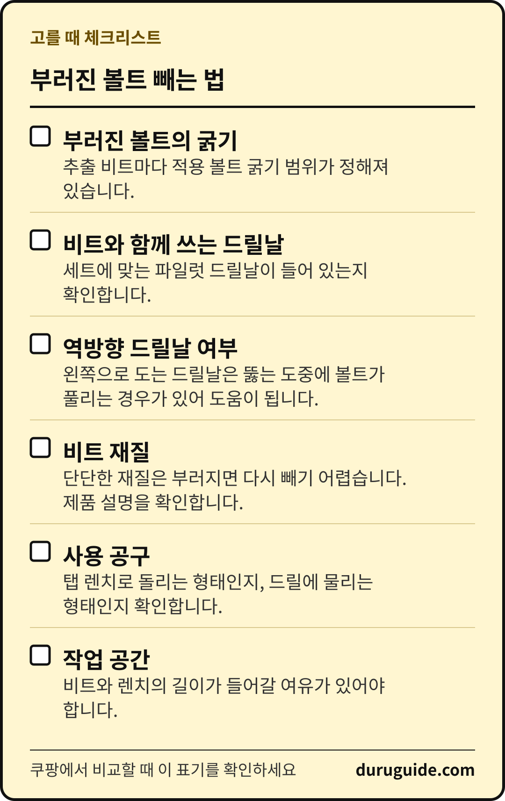

부러진 볼트 빼는 법, 역탭 추출 비트 고를 때 볼 것
이런 상황이죠
볼트를 풀다가 머리가 똑 부러져서 몸통만 구멍 안에 남은 상황입니다. 잡을 곳이 없어서 렌치를 댈 수도 없습니다. 오래된 자전거, 자동차 부품, 기계 덮개, 야외 철제 구조물에서 흔히 일어납니다.
왜 생기나
볼트가 부러지는 것은 대개 풀리는 힘보다 붙어 있는 힘이 더 클 때입니다.
- 녹이나 부식으로 나사산이 서로 달라붙었습니다.
- 서로 다른 금속이 닿아 있어서 시간이 지나며 고착됩니다.
- 처음 조일 때 규정보다 세게 조였습니다.
- 맞지 않는 공구로 비스듬하게 힘을 주었습니다.
- 한 번에 세게 돌리다가 순간적으로 부러졌습니다.
볼트가 이미 부러졌다면 같은 방법으로 힘만 더 주는 것은 소용이 없고, 오히려 남은 몸통이 더 깊이 박히거나 주변 나사산이 상할 수 있습니다. 먼저 붙어 있는 힘을 줄이는 쪽으로 접근합니다.
사기 전에 먼저 해볼 것
비용 없이 해볼 수 있는 단계가 있습니다.
- 몸통이 구멍 밖으로 조금이라도 나와 있는지 확인합니다. 나와 있으면 잠금 플라이어로 물고 천천히 좌우로 흔들며 돌려 봅니다.
- 침투 윤활제를 나사산 틈에 뿌리고 시간을 둡니다. 하룻밤 두면 더 낫습니다.
- 윤활제를 바른 뒤 볼트 주변을 망치로 가볍게 두드려 진동을 줍니다.
- 몸통이 평평하게 잘렸다면 펀치로 중앙에 작은 홈을 냅니다. 이후 드릴이 미끄러지지 않게 하는 용도입니다.
- 홈을 내기 어렵다면, 몸통 옆면에 얇은 홈을 파서 일자 드라이버로 돌리는 방법도 있습니다.
열을 가하는 방법은 연료, 윤활유, 플라스틱, 배선이 근처에 있으면 위험합니다. 확신이 없으면 하지 않는 편이 안전합니다. 작업 중에는 보안경을 쓰고, 금속 가루가 튈 수 있다는 점을 염두에 둡니다.
고를 때 체크리스트
역탭 추출 비트는 크기가 맞지 않으면 쓸 수 없습니다. 아래를 확인합니다.
| 확인할 것 | 이유 |
|---|---|
| 부러진 볼트의 굵기 | 추출 비트마다 적용 볼트 굵기 범위가 정해져 있습니다. |
| 비트와 함께 쓰는 드릴날 | 세트에 맞는 파일럿 드릴날이 들어 있는지 확인합니다. |
| 역방향 드릴날 여부 | 왼쪽으로 도는 드릴날은 뚫는 도중에 볼트가 풀리는 경우가 있어 도움이 됩니다. |
| 비트 재질 | 단단한 재질은 부러지면 다시 빼기 어렵습니다. 제품 설명을 확인합니다. |
| 사용 공구 | 탭 렌치로 돌리는 형태인지, 드릴에 물리는 형태인지 확인합니다. |
| 작업 공간 | 비트와 렌치의 길이가 들어갈 여유가 있어야 합니다. |
추출 비트는 볼트 중앙에 구멍을 낸 뒤 반대 방향으로 돌려 빼는 도구입니다. 구멍이 중심에서 벗어나거나 힘을 한꺼번에 주면 비트가 부러질 수 있습니다. 부러진 추출 비트는 볼트보다 단단해서 다시 제거하기 더 어렵습니다. 낮은 속도로 천천히 작업하는 것이 원칙입니다.
추천 제품 찾기
위 체크리스트에서 볼트 굵기와 작업 공간을 정한 뒤, 쿠팡에서 역탭 추출 비트 세트를 비교해 보세요. 적용 굵기 범위, 함께 들어 있는 드릴날, 사용할 공구와의 호환 여부를 상세 설명에서 확인하는 것이 좋습니다. 현재 가격은 쿠팡에서 확인해 주세요.

이 포스팅은 쿠팡 파트너스 활동의 일환으로, 이에 따른 일정액의 수수료를 제공받습니다.
이 콘텐츠는 토스쇼핑 쉐어링크 활동의 일환으로, 링크를 통한 구매가 발생하면 일정 수수료를 지급받습니다.